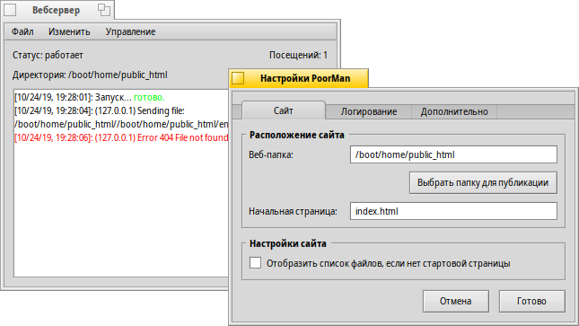

Вебсервер (PoorMan)
Вебсервер (PoorMan)
| Расположение в Deskbar: | ||
| Расположение в Tracker: | /boot/system/apps/PoorMan | |
| Настройки хранятся по адресу: | ~/config/settings/PoorMan Settings |
PoorMan - это простейший WEB-сервер с максимально простыми настройками. Он не имеет расширенных серверных функций, в отличие от специализированного серверного программного обеспечения, предлагая минимально необходимый функционал.
При первом запуске PoorMan запросит папку, из которой файлы будут отдаваться в сеть. Если вы нажмёте кнопку , то создастся новая папка /boot/home/public_html, в которую следует поместить стартовую HTML-страницу с названием по умолчанию index.html.
В PoorMan имеется консоль, которая отображает журнал активности, над ней расположена информация о состоянии (запущен сервер или нет), путь к раздаваемой папке, и счетчик посещений. Настройки могут быть изменены в меню :

Панель настроек состоит из трех вкладок:
На вкладке можно выбрать другую папку сайта (), изменить начальную страницу () и отметить опцию, которая отсылает список файлов, если начальная страница отсутствует.
В можно включить/выключить вывод сообщений в консоль (), а также активировать их запись в лог-файл ().
Вкладка позволяет задать максимальное количество одновременных подключений.
Остальные пункты меню PoorMan очевидны: можно сохранить полностью или частично выводимые в консоль данные (), очистить её или лог-файл (), запустить или остановить сервер () и обнулить счетчик посещений ().